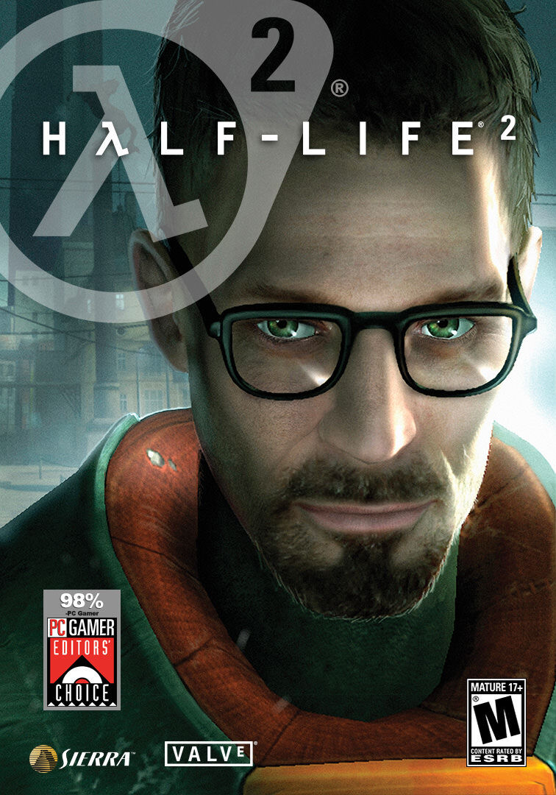
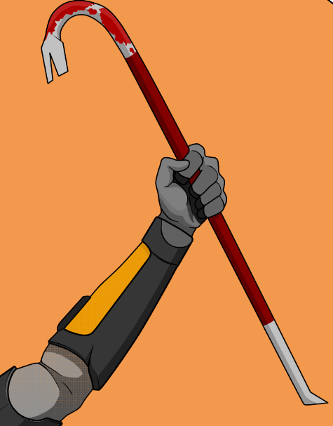
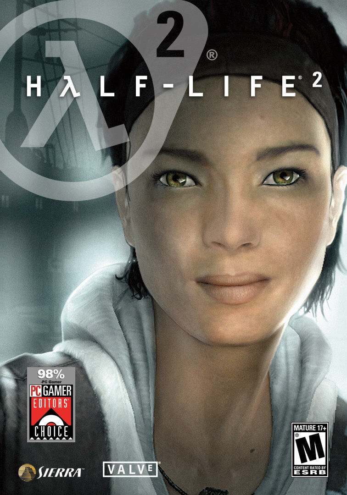
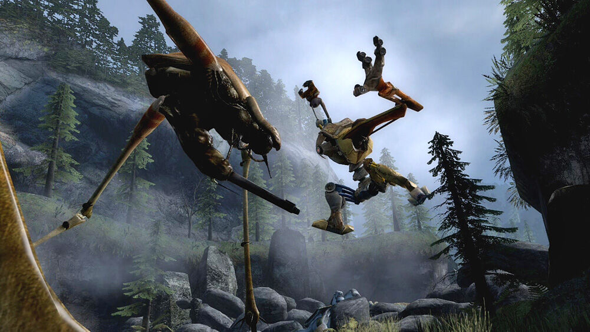
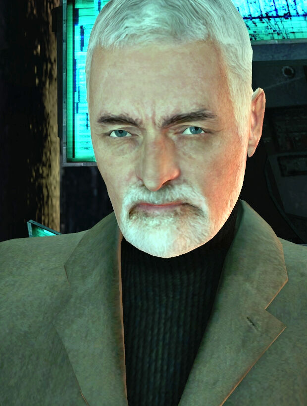
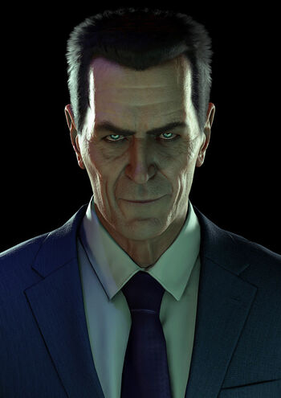

Го́рдон Фри́мен (англ. Gordon Freeman) — один из главных героев серии игр Half-Life. Он — физик-теоретик в научно-исследовательском комплексе Чёрная Меза, вынужденный защищать себя и человечество от враждебных существ из другого мира и иных врагов после неудачного эксперимента. В процессе он превращается в легендарного героя Сопротивления, став одним из лидеров борьбы с инопланетными захватчиками.

Монтировка, или лом (англ. Crowbar) — единственное оружие ближнего боя в серии Half-Life и в Half-Life 2. Это первое оружие, приобретаемое в Half-Life. Является символом вселенной Half-Life наравне с Гордоном Фрименом.

Аликс Вэнс (англ. Alyx Vance) — один из наиболее значимых персонажей Half-Life 2 и его эпизодов, а также протагонист приквела Half-Life: Alyx, молодая девушка афро-азиатского происхождения, играющая заметную роль в движении Сопротивления против Альянса.

Пёс (англ. Dog, стилизовано DØg) «домашний» робот Аликс Вэнс, спроектированный и собранный её отцом Илаем Вэнсом для её защиты, когда она была ещё ребёнком.

Доктор Уоллес Брин (англ. Wallace Breen) — бывший администратор «Чёрной Мезы». После завоевания Земли Альянсом — Временный Администратор Земли. Находясь в штаб-квартире Альянса на Земле, Цитадели Сити 17, он был представителем человечества и главным антагонистом в Half-Life 2.

"Проснитесь и пойте, мистер Фримен. Проснитесь и пойте."
G-Man («Джи-мэн») — ключевой, но таинственный персонаж серии Half-Life. Называемый «зловещим межпространственным бюрократом», он имеет особенности поведения и возможности, стоящие за пределом человеческих. Его личность и мотивы остаются по-прежнему неизвестными. Он играет роль надсмотрщика и, в конечном счёте, работодателя, наблюдая за Гордоном Фрименом и другими персонажами по мере развития серии. В первой части серии и аддонах носил с собой портфель с логотипом Черной Мезы желтого цвета.